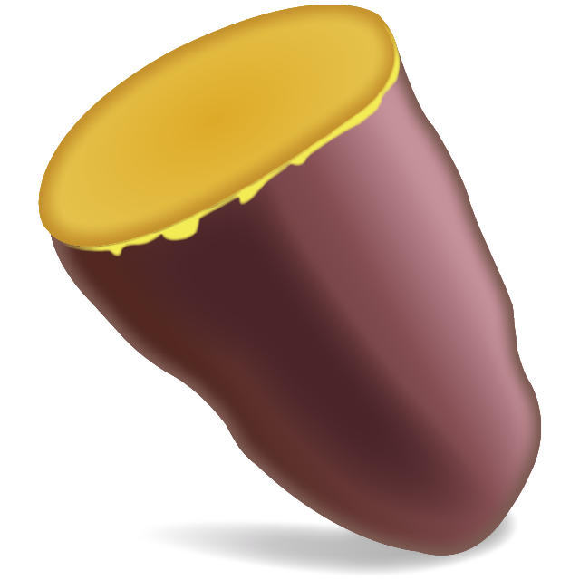
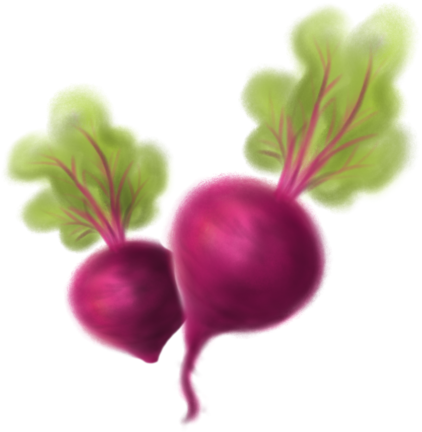
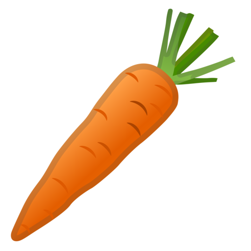
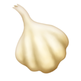
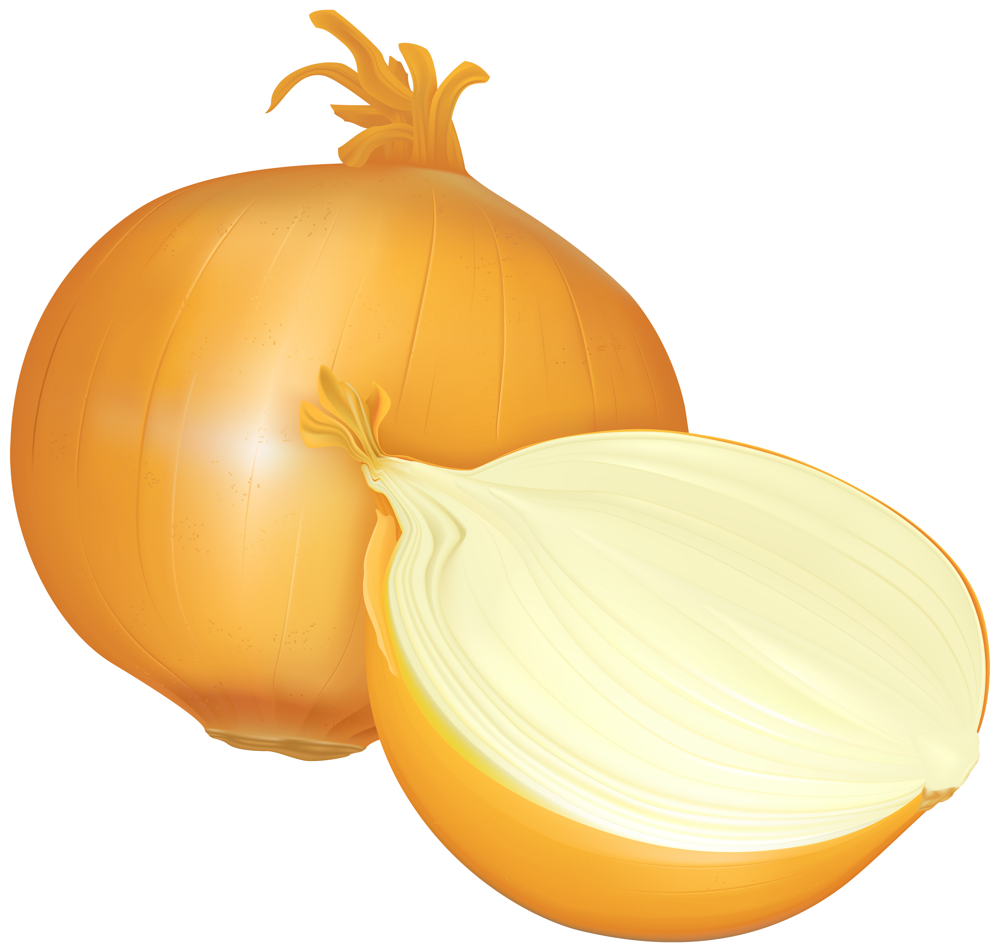

| Name |
Image |
Chess Rule |
| King |
♔ ♚ |
The rook moves any number of vacant squares forwards, backwards, left, or right in a straight line. It also takes part, along with the king, in a special move called castling. |
| Queen |
♕ ♛ |
The bishop moves any number of vacant squares diagonally in a straight line. Consequently, a bishop stays on squares of the same color throughout a game. The two bishops each player starts with move on squares of opposite colors |
| Rook |
♖ ♜ |
The queen moves any number of vacant squares in any direction: forwards, backwards, left, right, or diagonally, in a straight line. |
| Bishop |
♗ ♝ |
The king moves exactly one vacant square in any direction: forwards, backwards, left, right, or diagonally; however, it cannot move to a square that is under attack by an opponent, nor can a player make a move with another piece if it will leave the king in check. It also has a special move called castling, in which the king moves two squares towards one of its own rooks and in the same move, the rook jumps over the king to land on the square on the king's other side. Castling may only be performed if the king and rook involved have never previously been moved in the game, if the king is not in check, if the king would not travel through or into check, and if there are no pieces between the rook and the king. |
| Knight |
♘ ♞ |
The knight moves on an extended diagonal from one corner of any 2×3 rectangle of squares to the furthest opposite corner. Consequently, the knight alternates its square color each time it moves. Other than the castling move described above where the rook jumps over the king, the knight is the only piece permitted to routinely jump over any intervening piece(s) when moving. |
| Pawn |
♙ ♟ |
The pawn moves forward exactly one square, or optionally, two squares when on its starting square, toward the opponent's side of the board. When there is an enemy piece one square diagonally ahead of a pawn, either left or right, then the pawn may capture that piece. A pawn can perform a special type of capture of an enemy pawn called en passant. If the pawn reaches a square on the back rank of the opponent, it promotes to the player's choice of a queen, rook, bishop, or knight. |
| Name |
Image |
Chess Rule |
| King |
♔ ♚ |
The rook moves any number of vacant squares forwards, backwards, left, or right in a straight line. It also takes part, along with the king, in a special move called castling. |
| Queen |
♕ ♛ |
The bishop moves any number of vacant squares diagonally in a straight line. Consequently, a bishop stays on squares of the same color throughout a game. The two bishops each player starts with move on squares of opposite colors |
| Rook |
♖ ♜ |
The queen moves any number of vacant squares in any direction: forwards, backwards, left, right, or diagonally, in a straight line. |
| Bishop |
♗ ♝ |
The king moves exactly one vacant square in any direction: forwards, backwards, left, right, or diagonally; however, it cannot move to a square that is under attack by an opponent, nor can a player make a move with another piece if it will leave the king in check. It also has a special move called castling, in which the king moves two squares towards one of its own rooks and in the same move, the rook jumps over the king to land on the square on the king's other side. Castling may only be performed if the king and rook involved have never previously been moved in the game, if the king is not in check, if the king would not travel through or into check, and if there are no pieces between the rook and the king. |
| Knight |
♘ ♞ |
The knight moves on an extended diagonal from one corner of any 2×3 rectangle of squares to the furthest opposite corner. Consequently, the knight alternates its square color each time it moves. Other than the castling move described above where the rook jumps over the king, the knight is the only piece permitted to routinely jump over any intervening piece(s) when moving. |
| Pawn |
♙ ♟ |
The pawn moves forward exactly one square, or optionally, two squares when on its starting square, toward the opponent's side of the board. When there is an enemy piece one square diagonally ahead of a pawn, either left or right, then the pawn may capture that piece. A pawn can perform a special type of capture of an enemy pawn called en passant. If the pawn reaches a square on the back rank of the opponent, it promotes to the player's choice of a queen, rook, bishop, or knight. |
| Name |
Health Benefits |
Spinach
| Calcium, Vitamins, Iron, Magnesium, Folate and Antioxidants.
Nutritional Information |
Kale
| Reduces Cholestoraol, Vitamins A, C, and K.
Nutritional Information |
Broccoli
| Reduces rick of Cancer, Vitamins C, and K.
Nutritional Information |
Peas
| Protien, Fibre, Vitamins A, B, C, and K.
Nutritional Information |
Sweet Potatoes

| Potassium, Beta-Carotene, Vitamin A, C and B6.
Nutritional Information |
Beets

| Improves Heart Health, Potassium, Folate, Nitartes and Antioxidants.
Nutritional Information |
Carrots

| Prevents Cancer, Beta-Carotene and Vitamin A.
Nutritional Information |
Tomatoes

| Potassium, Vitamin C, Lycopene, Lutein and Zeaxanthin.
Nutritional Information |
Garlic

| Natural Antibiotic and Diallyl Sulfide.
Nutritional Information |
Onions

| Manganese, Sufur Compunds and Vitamin C and B6.
Nutritional Information |